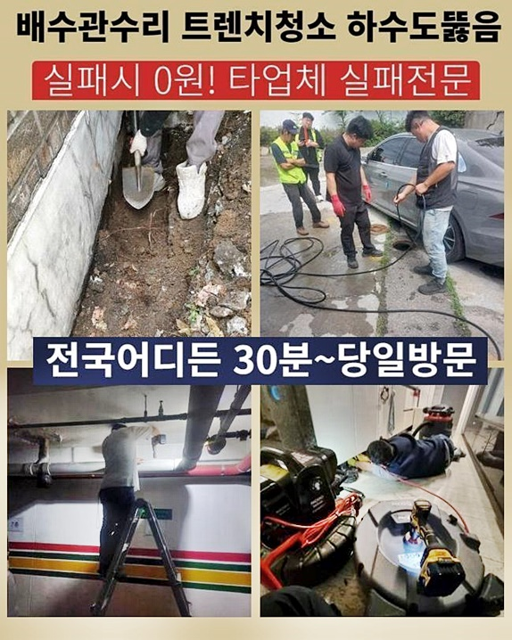
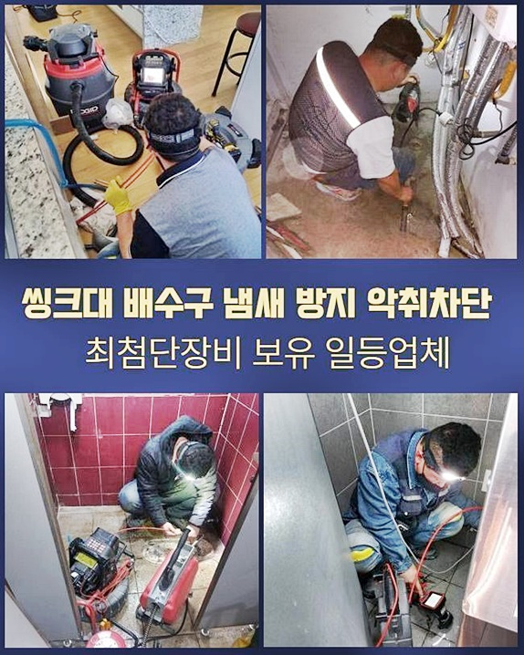
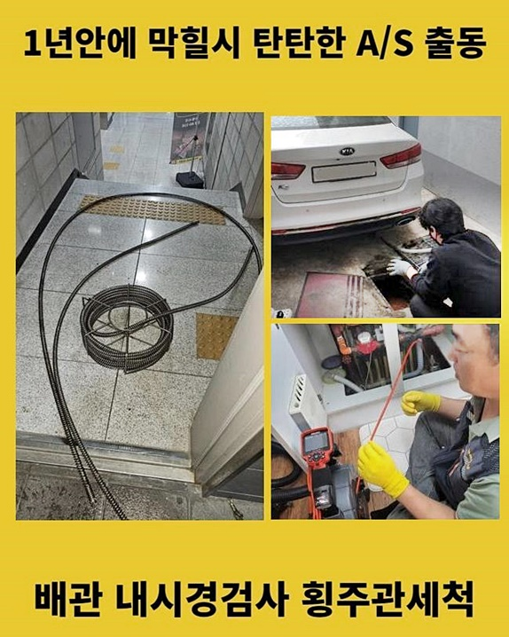
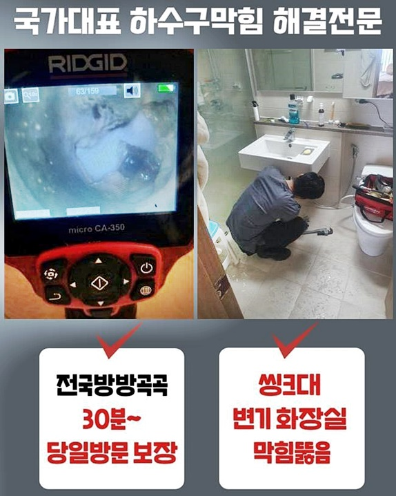
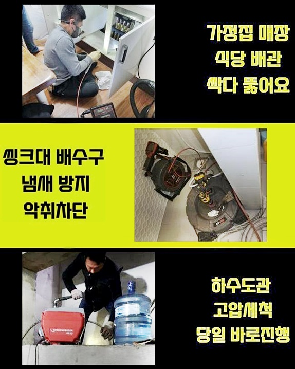

🏠 용인 유림동하수구역류 모현면 맨홀막힘 통수전문
용인시 처인구 배관막힘 전문 시공 후기

📋 작업 개요
- 위치: 용인시 처인구, 수원시 영통구, 화성시 동탄
- 서비스 유형: 배관막힘, 고압세척, 내시경점검
- 작업 일시:
- 업체명: 하수구수사대 (010-5615-2118)
🔍 문제 상황
용인 유림동하수구역류 모현면 맨홀막힘 통수전문
쉽게 해결되는 물빠짐 결함이 아닐 경우 배수구를 세심하게 점검해주어야 할 필요들이 있겠습니다
즉각적인 증세가 없다고 할 지라도 퇴적된 잔여물질은 뒤엉키면서 걷잡을 수 없는 문제들로 불거져요
구분건축물에 사시는 고객분이면 배수가 안되는 일로 의도치않게 이웃에게도 불편을 미치게되므로 약간일지라도 이상징후가 보이면 빨리 까닭을 파헤쳐야 해요
그 까닭은 배수장애는 심해질때 역류증세가 야기되거나 물들이 새는 증세가 발생될 가능성들이 높아서 처리를 속행하면 피해들을 예방할 수 있는데요
그렇기에 전문진의 시점에서 빠르게 수습하는것을 입 아프게 말씀드릴것도 이런 상황 때문인거죠
다양한 사람들이 위치한 건축물은 하수관이 뒤엉켜있어서 이곳저곳으로 오수가 이동해요
설명드릴 장소는 상가들과 거주세대가 존재하는 건물의 안쪽에서 야기되었어요
이러한 구조일땐 라인위치가 다양할 확률이 많겠지만
찾아뵈었던 고객님댁은 무난했던 형태였죠
위와같은 건물의 안쪽에서도 주거지에서 배수오류가 나타났다고 하여 문제의 장소로 가보았어요
도달하여 둘러보았더니 다행이였던건 아래층의 경우는 결함은 없어보였고 그 다음 이동한곳은 화장실의 내부로 바로 검수를 진행했어요

🔎 원인 분석
💡 전문가 진단: 정밀 진단 장비를 사용하여 슬러지의 고착 여부를 판명하고 타격/세척 작업을 실시했습니다.
천장위치에 설치된 개방구들을 열어보았더니 중앙에 사이즈가 있는 하수도의 형태들이 관찰되었는데요
들여보고나니 하수라인에 구멍들이 내주었던 자국들이 있었습니다
장기간에 걸쳐 지속적으로 막히게되어 수리를 실시하지않았나 판단되었습니다
시기적으로 막히는 문제들이 야기되거나 원인들이 해결이 안되어 계속해서 배수장애가 야기되게 됩니다
이와같은 것을 파악한다음 위에 위치한 거주지로 올라간뒤 바로 하수도 컨디션을 살필 생각이였는데요
살펴보니 지금은 막히게되어서 내시경기가 이용될 수 없어보였죠
이러한 경우에선 흡입기를 통해 부유물들을 제거시키고 내시경도구를 써주는데요
석션장비를 배수구부에 꽂아 강한 압력으로 청소를 실시했는데 기대완달리 대다수가 오수들이였고 소량의 잔재만 배출되었어요
증상들을 관찰할 생각이라면 내시경장비를 투입한 뒤 안측 모습을 확인해야해요
어디에서 막힘이 생겨난것인지 왜 역류증세가 발생된건지 중점으로 두고 살피니 살피고있는 장소보단 밑으로 자리를 옮겨 천장쪽에서 접근해나가 문제를 해결해가는게 원활한 해결이 될거라 생각했어요
진단결과에 따라서 이와같이 수리의 방향을 바꾸면서 수리를 이어갑니다 필요하다느끼면 내측에서 증상이 발생되어도 밖에 위치한 하수관에서 수리를 하기도 해요
막힘들을 풀어내주기위한 최상의 위치를 특정해내는 과정도 전문인의 실력 중 하나라고 볼 수 있겠습니다
진단을 하고난 다음 한층 내려가로 위치를 이동시키고 뚫기위한 준비를 마쳤어요

🔧 작업 과정
배수로를 수리할 목적으로 이용해주었던 것은 샤프트기라는 기기인데요
보통의 문제가 발생했을때 주로 이용되는 장치로 이물을 타격하여 스케일링도 수행합니다
샤프트기를 이용해 이물을 제거하기 시작했어요
오늘의경우 일반적인 사안관 달리 배수관의 사이즈도 컸고 잔해물들도 많았기에 샤프트기기만 써서는 충분한 이물이 제거될 수 없다는걸 느꼈어요
위와같은 이유로 인해 해결을 목적으로 고압청소의 방식들이 실시되야겠다는 판단을 내렸는데요
높은 압력의 물들을 사용하여 이물을 제거시켜야 해결에 닿을거라 생각했어요
내부 배수길이 안보일만큼 차곡차곡 뻗어있는 상태였어요
예상으로는 이미 왔다간 업체에선 석션장비와 샤프트기 운용의 단계들만 실시하고서 철수한 걸로 보여졌죠
때문에 잠깐은 배수되었겠으나 물막힘이 입 아프게 반복되고 추후에는 배수관이 온전히 작동하기 힘들정도였습니다
저희전문진이 고객님의 의뢰를 맡았으니 빈틈없이 증세를 완화시려고 했는데요
샤프트장치보다는 쎈 크란즐장비를 준비해서 작동을 시켰죠
사실 고압분사방법의 작업이 이물제거를 이어나갈때 강한 물로 작업을 실시하므로 안전에 각별히 주의해야해요
알맞은 시공법을 이어가지 않을 시 문제양상을 잠재우는것이 이루어지지 않아서 재차 안타깝게도 동일한 증세의 출현으로 부메랑처럼 날아오죠
그러므로 고객님도 주기적으로 막히게되는 쳇바퀴에서 벗어나고자 저희의 전문가들에게 문의를 주셨습니다
세척을 이어나갈땐 단순히 증상부위만을 뚫어내는게 아니고 원인들을 빈틈없이 타격하여 통수 길이 확보되도록 군더더기 없이 점검을 할 예정이에요
과거에 구멍을 뚫어놓은 위치에 크란즐을 넣어주었고 작업을 진행시켰죠
당연히 거주지일 경우엔 하수관의 직경길이가 좁기에 이러한 절차가 쉽지않았습니다 그러나 꾸준히 몰두해서 배관 세척을 수행했죠
물리성이 뛰어난 청수들이 분사되며 배수로를 청소해주었고 모든 부분에서 완벽하게 뚫어냈는데요
고압 청소를 하여 물들이 빠졌는데 문제될만한 요소들이 없는 수준으로 깔끔하게 마무리를 했어요
끝으로 통수진행 상황 파악을 거친 뒤 하수구막힘 세척을 끝마쳤어요


✅ 작업 완료
보통 세대에서는 고압세척작업들을 실시하는 때는 흔하게 보이지 않습니다 오늘의 장소에서는 실시가 필요하다는 생각이 들게되어 문제없이 고쳐드렸죠
지속적으로 막혀버릴만큼의 기름때가 어마어마하여 점검을 마치고 나니 저희마저 속이 다 시원했어요
설비별로 구조또는 여타 조건이 다르므로 장비라던지 과정들도 적합하게 대비해야해요
저희의경우 지금껏 진행했던 성공사례를 기반으로 재발없는 공사들로 배관들을 시정해요
고객분의 시간들이 헛되이 쓰이지않게 저희들이 돕겠습니다


⚠️ 하수구 배관 막힘 예방 및 관리 가이드
- ✅ 머리카락, 비닐, 물티슈 등 물에 분해되지 않는 이물질은 절대 흘려보내지 마세요.
- ✅ 기름기 많은 식기는 설거지 전 키친타올로 먼저 기름때를 닦아내세요.
- ✅ 주기적으로 배수구에 뜨거운 물을 가득 부어주어 유지방 고착을 방지하세요.
- ✅ 작업 후 1년 이내 재발 시 무상 A/S 보증 서비스를 제공합니다.
💡 핵심 정리
- 확실한 장비 작업(내시경 점검 및 샤프트 스케일링)으로 원인을 뿌리 뽑습니다.
- 작업 후 1년 이내에 동일한 부위 재발 시 100% 무상 A/S 서비스를 보장합니다.
- 서울 · 경기 · 인천 전 지역에 24시간 언제든 긴급 출동할 수 있도록 항시 대기 중입니다.
❓ 자주 묻는 질문 (FAQ)
🚨 용인시 처인구 배관막힘 문제로 고민이신가요?
정확한 원인 진단과 확실한 시공으로 재발 없는 해결을 약속드립니다.
24시간 긴급 출동 | 서울 · 경기 · 인천 전지역 | 1년 내 재발 시 무상 A/S